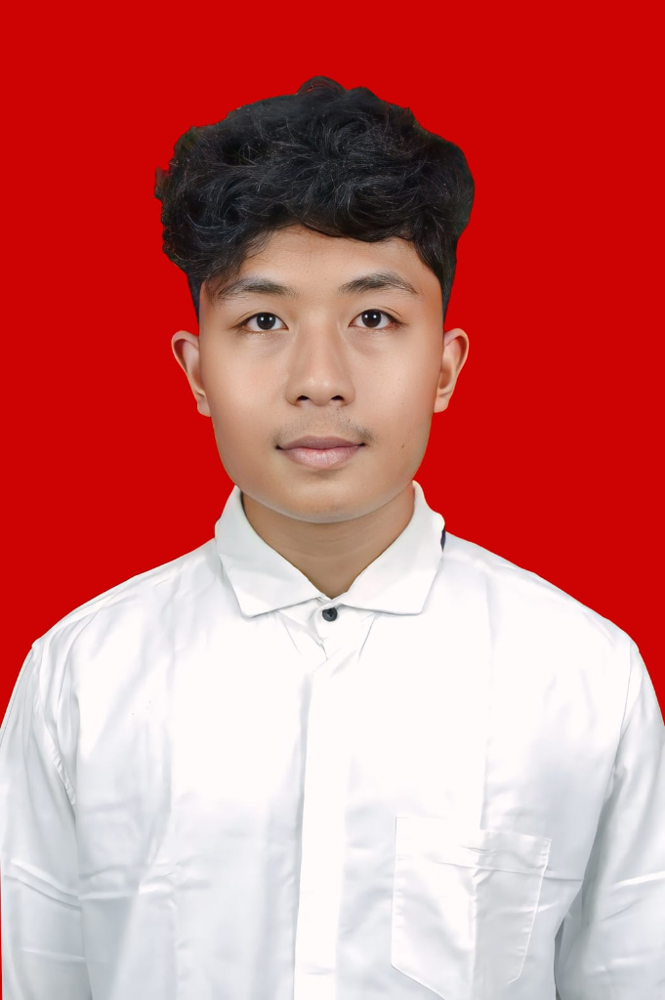

Perkenalkan saya Abimanyu Bumi Langgeng dari Universitas Jember Fakultas Ilmu Komputer program studi Teknologi Informasi. Saya berasal dari Kabupaten Jember.
Riwayat Pendidikan:
Juara 2 Kumite +70kg SMA Putra
Juara 1 Open Kumite Perorangan Junior -76kg Putra
Juara 1 Festival Kumite Perorangan Junior Putra 76kg
Juara 1 Kumite +68kg SMA Putra, Juara 3 Kumite -68kg SMA Putra
Juara 1 Kumite Perorangan -76kg Junior Putra, Juara 3 Kumite Perorangan 76kg Junior Putra
Juara 2 Kumite +76kg Junior Putra, Juara 1 Kumite -70kg & +70kg SMA Putra